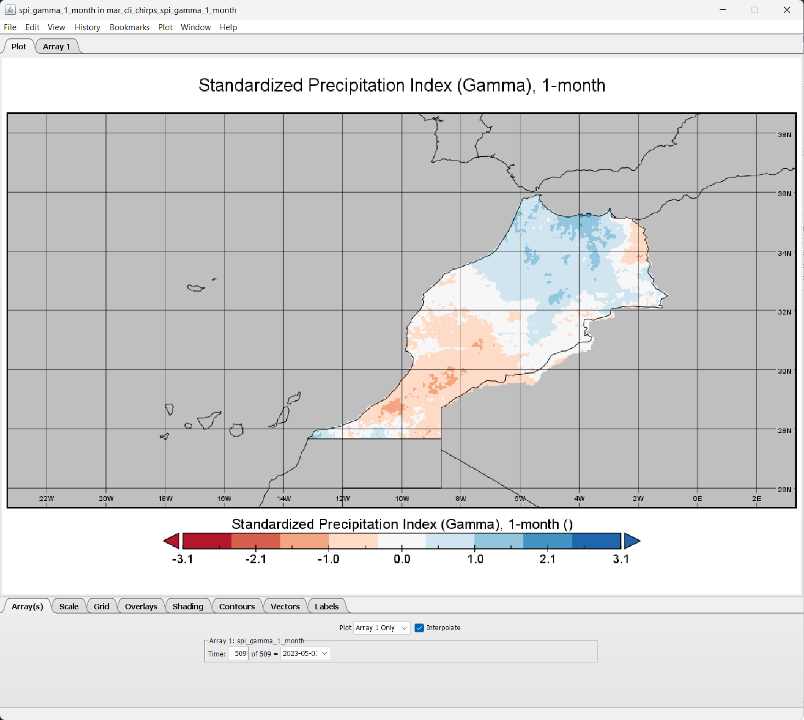

How-to guide SPI analysis#
In this section provide information on how to access and download satellite precipitation estimates data, and use it to calculate SPI on defined time scales.
0. Working Directory#
For this tutorial, We are working on these folder /mnt/x/Temp/CHIRPS/SPI/mar/ directory. We have sub-folders inside this directory:
00_downloadsPlace to put downloaded CHIRPS data
01_input_geotiffPlace to put GeoTIFF file that will use to convert to single netCDF with time dimension enabled
02_input_netcdfPlace to put netCDF data that will use as an input
03_intermediate_output_netcdfPlace to put netCDF outputt generated from
climate-indicespackage04_fittingPlace to put fitting parameters output from the calculation
05_spi_output_netcdfOutput folder for SPI calculation following CF convention
06_output_geotiffGeoTIFF output, generate by CDO and GDAL
07_drought_variableSPI-based drought characteristic output
08_tabularTabular data of the SPI and derivative products, comes with admin2 information
09_shapefilesPlace to put shapefile for clipping area of interest
Feel free to use your own preferences for this setting/folder arrangements.
1. Preparing input for SPI#
SPI requires monthly rainfall data, and there are many source providing global high-resolution gridded monthly rainfall data:
For better result, SPI required minimum 30-years of data.
If you are prefer to use your own dataset also fine, you can still follow this guideline and adjust some steps and code related to filename, unit, format and structure.
All the steps below required you to have Anaconda installed in your system along the required packages: python, numpy, matplotlib, gdal, nco, cdo, netcdf4, pandas, geopandas, xarray, jupyter.
Please install above package in the new environment, so it will not break your existing one.
1.1. Input requirement#
The climate-indices python package enables the user to calculate SPI using any gridded netCDF dataset. You are required to install this using pip install climate-indices. However, there are certain specifications for input files that vary based on input type.
Precipitation unit must be written as
millimeters,milimeter,mm,inches,inchorin.Data dimension and order must be written as
lat,lon,time(Windows machine required this order) ortime,lat,lon(Works tested on Mac/Linux and Linux running on WSL).If your study area are big, it’s better to prepare all the data following this dimension order:
lat,lon,timeas all the data will force following this order during SPEI calculation by NCO module. Let say you only prepare the data as is (leaving the order tolat,lon,time), it also acceptable but it will required lot of memory to use re-ordering the dimension, and usually NCO couldn’t handle all the process and failed.
1.2. Download CHIRPS data#
Let’s download CHIRPS monthly data in GeoTIFF format and prepare it as input for SPI calculation.
Navigate to
/00_downloadsfolder in your directory. Download usingwgetall CHIRPS monthly data in GeoTIFF format from Jan 1981 to May 2023 (this is lot of data +-7GB zipped files, and become 27GB after extraction, please make sure you have bandwidth and unlimited data package). Paste and Enter below script in your Terminal.
mkdir CHIRPS
cd CHIRPS
export URL='https://data.chc.ucsb.edu/products/CHIRPS-2.0/global_monthly/tifs/'; curl "$URL" | grep -E 'a href=' | perl -pe 's|.*href="(.*?)".*|\1|' | { while read -r f; do wget "$URL"/"$f"; done }
Gunzip all the downloaded files
gunzip *.gz
1.3. Clip data using a shapefile based on area of interest#
Download the Morocco boundary shapefile datapartnership/myanmar-economic-monitor. And save it in the
09_shapefilesdirectory above then unzip it.
!!! info You can use your own boundary in shapefile and use it to clip the rainfall raster data based on your preferred area of interest.
Clip your area of interest using Morocco boundary and save it to
01_input_geotiffdirectory. We will usegdalwarpcommand from GDAL to clip all GeoTIFF files in a folder.
for i in `find *.tif`; do gdalwarp --config GDALWARP_IGNORE_BAD_CUTLINE YES -srcnodata NoData -dstnodata -9999 -cutline ../09_shapefiles/mar_grid_diss.shp -crop_to_cutline $i ../01_input_geotiff/$i; done
Then rename all the GeoTIFF file using below code
for file in chirps-v2.0.*.tif; do
# Extract year and month from filename
year=$(echo $file | cut -d '.' -f3)
month=$(echo $file | cut -d '.' -f4 | cut -d '-' -f1)
# Construct new filename
new_filename="mar_cli_chirps_precip_month1_${year}${month}.tif"
# Rename the file
mv "$file" "$new_filename"
done
If you have limited data connection or lazy to download +-7GB and process +-27GB data, you can get pre-processed clipped data for Morocco covering Jan 1981 to May 2023, with file size +-29MB. Link: datapartnership/myanmar-economic-monitor
1.4. Convert GeoTIFFs to single netCDF#
Use below script to convert all GeoTIFF file in a folder into single netCDF file that is CF-Compliant.
#!/usr/bin/env python
"""
Convert CHIRPS GeoTIFF in a folder to single NetCDF file with time dimension enabled that is CF-Compliant
http://cfconventions.org/cf-conventions/v1.6.0/cf-conventions.html
Based on Rich Signell's answer on StackExchange: https://gis.stackexchange.com/a/70487
This script was tested using CHIRPS monthly data. Adjustment is needed if using other timesteps data for CHIRPS
NCO (http://nco.sourceforge.net) and GDAL (https://gdal.org) must be installed before using this script
"""
import numpy as np
import datetime as dt
import os
from osgeo import gdal
import netCDF4
import re
ds = gdal.Open('../SPI/mar/01_input_geotiff/mar_cli_chirps_precip_month1_198101.tif') # Data location
a = ds.ReadAsArray()
nlat,nlon = np.shape(a)
b = ds.GetGeoTransform() #bbox, interval
lon = np.arange(nlon)*b[1] + b[0] + (b[1]/2) # add half the x pixel size to the lon
lat = np.arange(nlat)*b[5] + b[3] + (b[5]/2) # add half the y pixel size to the lat
lat = np.flipud(lat) # flip the latitudes
basedate = dt.datetime(1980,1,1,0,0,0)
# Create NetCDF file
nco = netCDF4.Dataset('../SPI/mar/02_input_netcdf/mar_cli_chirps_monthly_1981_2023.nc','w',clobber=True) # Output name
# Create dimensions, variables and attributes:
nco.createDimension('lon',nlon)
nco.createDimension('lat',nlat)
nco.createDimension('time',None)
timeo = nco.createVariable('time','f4',('time'))
timeo.units = 'days since 1980-1-1 00:00:00'
timeo.standard_name = 'time'
timeo.calendar = 'gregorian'
timeo.axis = 'T'
lono = nco.createVariable('lon','f4',('lon'))
lono.units = 'degrees_east'
lono.standard_name = 'longitude'
lono.long_name = 'longitude'
lono.axis = 'X'
lato = nco.createVariable('lat','f4',('lat'))
lato.units = 'degrees_north'
lato.standard_name = 'latitude'
lato.long_name = 'latitude'
lato.axis = 'Y'
# Create container variable for CRS: lon/lat WGS84 datum
crso = nco.createVariable('crs','i4')
crso.long_name = 'Lon/Lat Coords in WGS84'
crso.grid_mapping_name='latitude_longitude'
crso.longitude_of_prime_meridian = 0.0
crso.semi_major_axis = 6378137.0
crso.inverse_flattening = 298.257223563
# Create float variable for precipitation data, with chunking
pcpo = nco.createVariable('precip', 'f4', ('time', 'lat', 'lon'),zlib=True,fill_value=-9999.)
pcpo.units = 'mm'
pcpo.standard_name = 'convective precipitation rate'
pcpo.long_name = 'Climate Hazards group InfraRed Precipitation with Stations'
pcpo.time_step = 'monthly'
pcpo.missing_value = -9999.
pcpo.geospatial_lat_min = 27.65
pcpo.geospatial_lat_max = 35.90
pcpo.geospatial_lon_min = -13.15
pcpo.geospatial_lon_max = -1.00
pcpo.grid_mapping = 'crs'
pcpo.set_auto_maskandscale(False)
# Additional attributes
nco.Conventions='CF-1.6'
nco.title = "CHIRPS v2.0"
nco.history = "created by Climate Hazards Group. University of California at Santa Barbara"
nco.version = "Version 2.0"
nco.comments = "time variable denotes the first day of the given month."
nco.website = "https://www.chc.ucsb.edu/data/chirps"
nco.date_created = "2023-07-12"
nco.creator_name = "Benny Istanto"
nco.creator_email = "bistanto@worldbank.org"
nco.institution = "GOST/DECAT/DEC Data Group, The World Bank"
nco.note = "The data is developed to support drought monitoring in Marocco. This activities will support the World Bank to assess extreme dry and wet periods"
# Write lon,lat
lono[:]=lon
lato[:]=lat
pat = re.compile('mar_cli_chirps_precip_month1_([0-9]{6})\.tif$')
itime=0
# Step through data, writing time and data to NetCDF
for root, dirs, files in os.walk('../SPI/mar/01_input_geotiff/'): # GeoTIFF location
dirs.sort()
files.sort()
for f in files:
match = re.match(pat, f)
if match:
date_str = match.group(1) # This will give you '198101'
date = dt.datetime.strptime(date_str, '%Y%m') # Convert to datetime
print(date)
dtime=(date-basedate).total_seconds()/86400.
timeo[itime]=dtime
# precipitation
pcp_path = os.path.join(root,f)
print(pcp_path)
pcp=gdal.Open(pcp_path)
a=pcp.ReadAsArray() # data
pcpo[itime,:,:]=np.flipud(a) # flip the data in y-direction
itime=itime+1
nco.close()
After completed, you will find the result in the folder 02_input_netcdf
1.5. Check variable and attribute#
As explain in Step 1.1. Input requirement above, we need to check the variable and attribute on above result to make sure all meet the requirements.
Navigate to
02_input_netcdffolder in the working directory. Then execute below command.ncdump -h mar_cli_chirps_monthly_1981_2023.nc
As you can see from the result, all the requirement is completed: unit is in
mm, order dimension for each variables istime,lat,lon, andtimedimension is inUNLIMITED. The dataset can be used as input toclimate-indicespackage for computing SPI.Following last point in the section 1.1, you could consider to re-order the dimension into
lat,lon,timeas all the data will force following this order during SPI calculation by NCO moduleLet’s re-order the variables into
lat,lon,timeusingncpdqcommand
ncpdq -a lat,lon,time mar_cli_chirps_monthly_1981_2023.nc mar_cli_chirps_monthly_1981_2023_temp1.nc
Note
Notes on re-ordering process (Case by case)
After re-ordering the variables, sometimes user experience
latorlondimension becomesUNLIMITEDwhich is wrong. Thetimedimension should be theUNLIMITEDdimension.Fortunately you can do this to fix the
latorlondimension who becomesUNLIMITEDusingnckscommand below:ncks --fix_rec_dmn lat mar_cli_chirps_monthly_1981_2023_temp1.nc -o mar_cli_chirps_monthly_1981_2023_temp2.nc
And to make
UNLIMITEDthetimedimension again usingnckscommand below:ncks --mk_rec_dmn time mar_cli_chirps_monthly_1981_2023_temp2.nc -o mar_cli_chirps_monthly_1981_2023_llt.nc
If you don’t come accross the problem,
latorlondimension becomesUNLIMITED, then skip above process and go directly to step below.
2. Calculate SPI#
Let’s start the calculation!
In your Terminal, run the following code to calculate SPI 1-month (assume we will use file
mar_cli_chirps_monthly_1981_2023.ncas input)process_climate_indices --index spi --periodicity monthly --scales 1 --calibration_start_year 1991 --calibration_end_year 2020 --netcdf_precip mar_cli_chirps_monthly_1981_2023.nc --var_name_precip precip --output_file_base ../03_intermediate_output_netcdf/mar_cli_chirps --multiprocessing all --save_params ../04_fitting/mar_cli_chirps_spi01_1991_2023_fitting.nc --overwrite
During the calculation, it will printed some information in your Terminal to show the progress until completed
2023-07-13 18:53:42 INFO Start time: 2023-07-13 18:53:42.522815 2023-07-13 18:53:42 INFO Computing monthly SPI 2023-07-13 18:53:44 INFO Computing 1-month SPI (Gamma) 2023-07-13 18:54:25 INFO Computing 1-month SPI (Pearson) 2023-07-13 18:55:32 INFO End time: 2023-07-13 18:55:32.233653 2023-07-13 18:55:32 INFO Elapsed time: 0:01:49.710838
Above code is example for calculating SPI 1-months. Example: you are interested to calculate SPI 3-months or SPI 3, 6 and 12-months, then adjust above code into
--scales 3or--scales 3 6 12. Don’t forget to adjust the Fitting output filename too.The above command will compute SPI (both gamma and Pearson Type III distributions) from monthly precipitation dataset, and the calibration period used will be Jan-1991 through Dec-2020. The index will be computed at
1-monthtimescales. The output files will be <out_dir>/mar_cli_chirps_spi_gamma_xx.nc, and<out_dir>/mar_cli_chirps_spi_pearson_xx.nc.
3. Re-order the dimension (again) to follow the CF Convention#
SPI output generated by climate-indices has the dimension order lat, lon, time by default. Let’s re-order the dimension into time,lat,lon using ncpdq command from NCO and save the result to folder 05_spi_output_netcdf
ncpdq -a time,lat,lon mar_cli_chirps_spi_gamma_1_month.nc ../05_spi_output_netcdf/mar_cli_chirps_spi_gamma_1_month.nc
Navigate your Terminal to folder 05_spi_output_netcdf, check result and metadata to make sure everything is correct.
ncdump -h mar_cli_chirps_spi_gamma_1_month.nc
4. Visualize the result using Panoply#
Let visualize the result using Panoply netCDF, HDF and GRIB Data Viewer. If you don’t have the software, please install it from https://www.giss.nasa.gov/tools/panoply/download/
From the
05_spi_output_netcdfdirectory, right-click filemar_cli_chirps_spi_gamma_1_month.ncand Open With Panoply.From the Datasets tab select
spi_gamma_1_monthand click Create PlotIn the Create Plot window select option Georeferenced Longitude-Latitude.
When the Plot window opens:
Array tab: Change the time into
509to view data onMay 2023Scale tab: Change value on Min
-3.09, Max3.09, Major6, Color TableCB_RdBu_09.cptGrid tab: Zoom in the map through menu-editor Plot > Zoom - Plot In few times until Morocco appear proportionally, then Change value on Center on Lon
-10.0Lat32.0, then Set grid spacing2.0and Labels on every grid lines.Overlays tab: Change
Overlay 1toMWDB_Coasts_Countries_1.cnob

5. Convert the result to GeoTIFF#
Sometimes we need to have the data in different format like GeoTIFF for further process using common GIS software. If that so, we need Climate Data Operator (CDO) to do a conversion of the result into GeoTIFF format.
Navigate your Terminal to folder
05_spi_output_netcdfThen convert all
mar_cli_chirps_spi_gamma_1_month.ncvalue into GeoTIFF withtimedimension information as the filename using CDO and GDAL. Usually the geotiff image will not have projection information, so we will add that information via the script:-a_ullr ulx uly lrx lry -a_srs EPSG:4326Execute below script and save the result to folder
06_output_geotifffor t in `cdo showdate mar_cli_chirps_spi_gamma_1_month.nc`; do formatted_date=$(date -d $t +%Y%m%d) cdo seldate,$t mar_cli_chirps_spi_gamma_1_month.nc dummy.nc gdal_translate -of GTiff -a_ullr -13.15 35.90 -1.00 27.65 -a_srs EPSG:4326 -co COMPRESS=LZW -co PREDICTOR=1 dummy.nc ../06_output_geotiff/mar_cli_chirps_spi01_${formatted_date}.tif done
Next, you can continue to translate other SPI files.